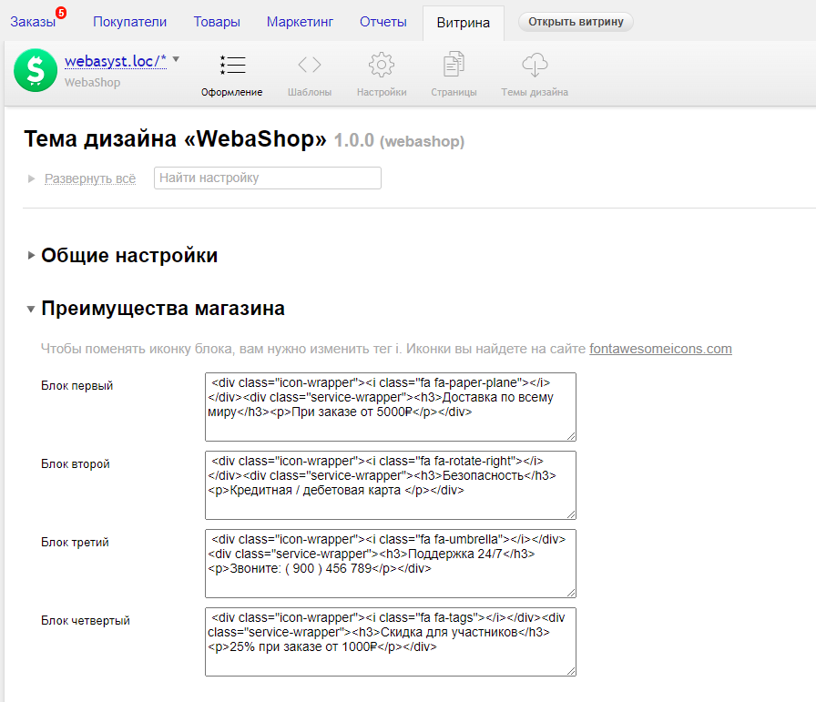
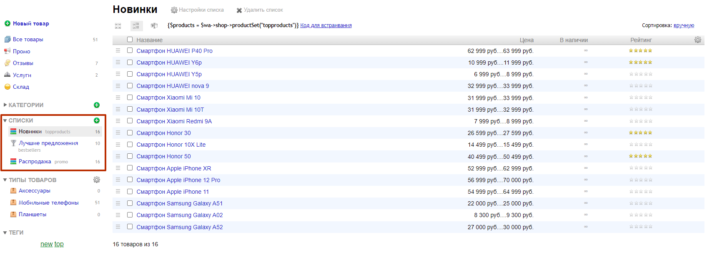

Спасибо за покупку!
WebaShop - Интернет магазин техники и других товаров для Webasyst
Создан : 11.01.2022Разработан : nBrains
Привет! Большое спасибо за покупку моего шаблона.
Если у вас возникли какие-то вопросы, которые выходят за рамки этого руководства,
пожалуйста, не стесняйтесь обращаться ко мне по электронной почте или через мой сайт разработчика nBrains.
Желаю вам хороших продаж!
С уважением nBrains
Изменить лого
В шаблоне есть 2 основных логотипа. Для их изменения перейдите в раздел Витрина, приложения Магазин. Во вкладке "Общие настройки" вы найдете опции логотипов.
Главный слайдер
Чтобы добавить новый слайд в главный слайдер. :
Вам нужно перейти в раздел "Маркетинг" и добавить новую акцию.
Далее написать название акции и добавить инструмент Баннер.
Выбрать изображение, заполнить текст, если он необходим вам. Указать цвет текста и цвет кнопки и ссылку куда будет вести кнопка. Далее сохранить.
Преимущества магазина
Для того что отредактировать преимущества магазина.
Перейдите в раздел Витрина, во вкладку Преимущества магазина.
Лучшие предложения и Распродажа
Для формирования блока используются списки со значениями ID promo и bestsellers. Если у вас эти списки были удаленны вам необходимо будет добавить их.
Далее вам необходимо добавить товары в нужный вам список.
Новинки
Для формирования блока вам нужен список с ID topproducts. Вам нужно добавить его в разделе Списки, и далее добавить в этот список нужные вам товары.
Самые популярные и Новые продукты
Для вывода товаров в этом блоке вам нужно назначить теги на нужные вам товары. Тег new на Новые продукты, и Тег top на вывод популярных продуктов. Подробнее в скриншоте ниже.